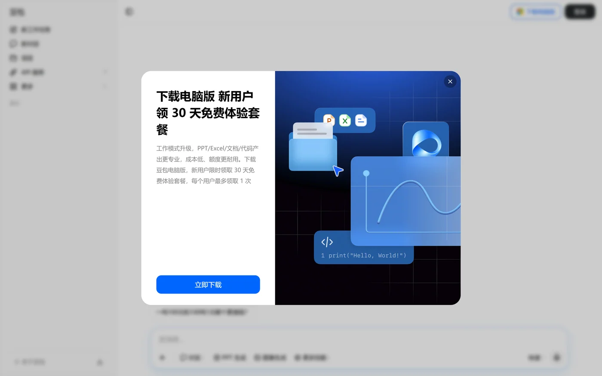
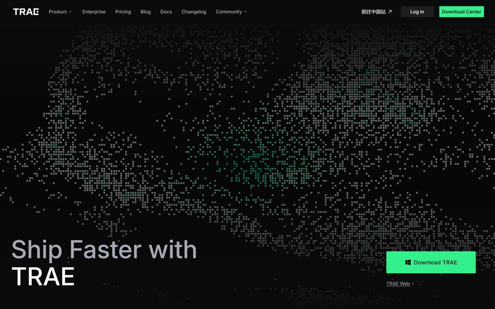
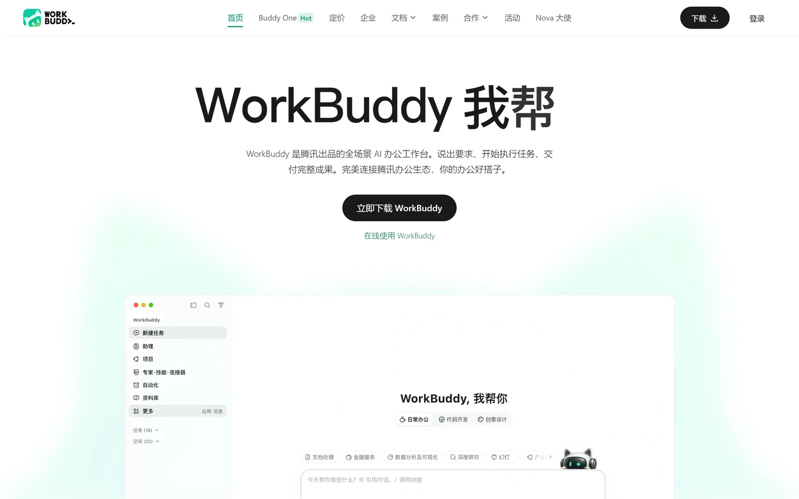
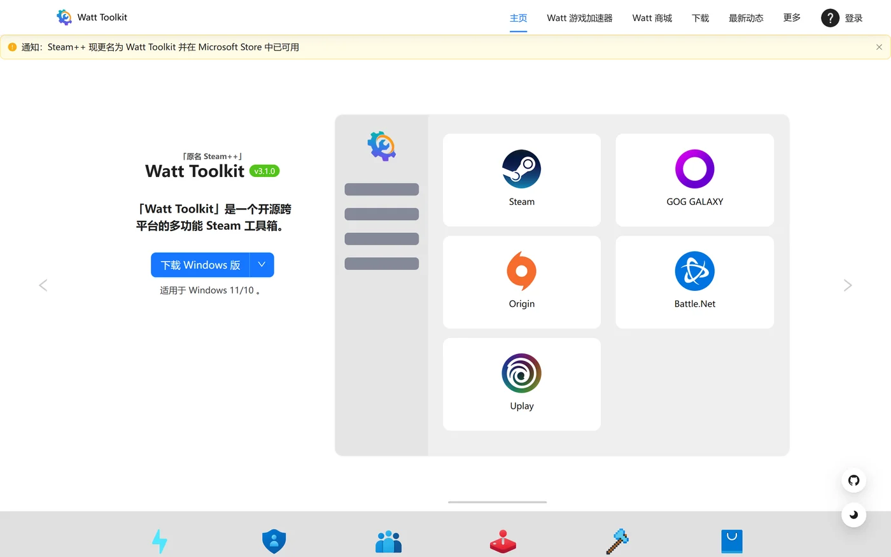
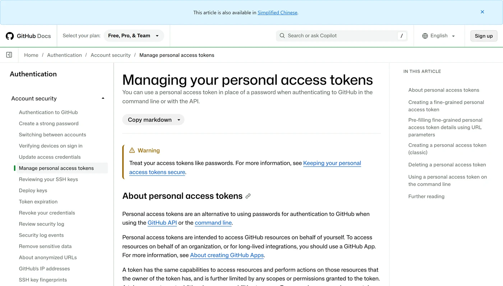

工具太多，选不出来
豆包、Trea、Cursor、Copilot……每个都说自己最好。于是先花一周时间「选工具」，一行页面也没写。
一个静态网站从想法到线上可访问，只需要走完四步：选定 AI 工具、确定技术栈、部署到 GitHub Pages、再选择手动更新或让 AI 接管。 但在第一步之前，大多数人先被这四件事拦住了。
豆包、Trea、Cursor、Copilot……每个都说自己最好。于是先花一周时间「选工具」，一行页面也没写。
Tailwind、Astro、DaisyUI、Primer CSS……文档是英文的，教程是三年期的，还没开始就被术语劝退。
本地打开一切正常，部署完却是一片空白：图片 404、样式丢失，不知道问题出在哪一层。
只想微调一行字，也要重新拖文件、提交、等部署。改到第三次，热情基本耗尽。
这四件事，
没有一件是编程能力问题。
VibeCoding 就是自然语言驱动建站——选好工具链，从构思、写代码、反复调优到一键上线，持续维护自己的静态网站。
它们不是二选一，而是在不同位置各有一个更顺手的：构思、编码、迭代各占一段。 把「最贵的动作」交给最合适的工具，是省时间也省额度的关键。
前期构思：梳理站点思路、写文案、搭项目整体框架。适合把模糊想法整理成结构，快速产出原型方案与文案初稿。
编码阶段：写页面代码、调试静态网页。独立的 AI 原生 IDE，代码补全与多文件重构能力完善。
高频迭代：多轮修改页面细节、反复调样式与功能。同样支持开发与项目迭代，积分消耗更少，长期反复调试更省积分。




静态站点部署到 GitHub Pages 时，优先选能通过 CDN 直接引入、不需要本地打包构建的方案，省掉一整套环境配置。 下面这些都是「复制一行链接就能用」的选项。

 +
+
网上示例多、AI 生成代码时识别度高、改样式灵活，和「口述需求让 AI 改页面」的方式契合。
这条路径不装任何软件、不配密钥，全部在 GitHub 网页上完成，适合第一次上线。 下面三步的界面截图都来自 GitHub 官方文档，照着点即可。
登录 github.com，点右上角「+」新建 repository 并命名。两步设置决定成败：公开性必须设为 Public，否则 Pages 托管受限；不要勾选初始化 README，否则上传时会多一次冲突。
Public，这是 Pages 免费托管的前提进入仓库点「uploading an existing file」，把本地全部文件拖入后提交。这一步有两个硬性要求：根目录必须存在 index.html；图片、CSS、JS 全部用相对路径（如 ./img/a.png），写本地绝对路径上线后必然 404。
./assets/...index.htmlSettings → 左侧 Pages → Source 选 Deploy from a branch → 分支选 main、目录选 /root → Save。等待 1 到 3 分钟，页面会给出 https://用户名.github.io/仓库名/ 的访问地址。
① 仓库是否 Public；② 根目录是否有 index.html；③ 资源路径是否写成了本地绝对路径（如 D:\网站\img\a.png）。这三条能覆盖绝大多数「上线就白屏」。
原理是一次性把仓库读写凭证交给 AI 工具，之后由 AI 改代码并自动推送；main 分支一变，GitHub Pages 自动重新部署，网站跟着刷新。 核心就是那串密钥 —— PAT（Personal Access Token，个人访问令牌）。

在编辑器里把下面这段原样发给 AI，作为该站点的固定维护规则。之后每次要改页面，只需要补一句新的需求。
你是本 GitHub Pages 静态站点的维护 Agent。
仓库已经关联远程 github 地址，pages 托管已经配置完成。
当我提出修改需求，你直接修改对应 html/css/js 代码；修改完成之后自动执行 git add、git commit、git push 推送到 main 分支。
推送成功后 GitHub Pages 会自动重新部署网站。
每次改动完成告诉我修改点，并且输出网站访问链接。
不要擅自大幅度改动原有页面布局，遵循当前页面风格。之后只需要打字描述想要的效果。AI 会依次完成：读取并修改对应文件、暂存改动、生成提交注释并推送、触发 Pages 重新部署，最后把线上链接给你。
密钥不能写进网页代码、不能提交到仓库、不能发到群里。不用时直接在 GitHub 后台撤销该令牌，立即失效。令牌泄漏等于把仓库的写权限交出去。
主路径建议：零基础先走手动上传，把网站跑通；需要频繁改页面时再切到 AI 接管，只配置一次密钥，之后用自然语言提需求就能自动更新站点。
| 维度 | 路径一手动上传 | 路径二AI 接管 |
|---|---|---|
| 适合场景 | 一次性上线、改动很少 | 需要频繁迭代、口述改页面 |
| 是否需要 PAT | 不需要 | 需要，或用 OAuth 授权替代 |
| 更新方式 | 手动拖拽文件覆盖上传 | AI 改代码并自动推送 |
| 优点 | 入门简单，不用装软件 | 迭代极快，说需求就改网站 |
| 缺点 | 反复修改很繁琐 | 需要一次性配置环境与密钥 |
五步构成一个可以长期运转的闭环。点任意一步，看它在这一轮里做什么。
描述站点目标、页面风格、文案与结构，让工具产出整体思路与项目框架。这一步的产出不是代码，而是一份「能交给下一步的需求」。
先把「给谁看、看什么」写清楚用 Tailwind + DaisyUI 这类组合生成并调试页面代码，先做出能看的原型。不要在这一步追求完美，能跑起来比好看更重要。
原型跑通，再谈细节反复口述需求改细节、调样式，用积分消耗更低的工具承担多轮修改。改动越具体，返工越少：说「按钮换成品牌蓝」比说「再好看点」有效得多。
需求写具体，是最高效的提示词简单场景手动上传；要自动化则配好 PAT，由 AI 推送改动并自动部署。上线动作一旦变成「push 即发布」，你就不会再害怕改版。
main 分支一变，Pages 自动重建打开线上链接看实际效果，不满意继续提需求，形成持续开发闭环。真正的成长发生在第 2 轮、第 3 轮修改，而不是第一次生成。
验证 → 迭代，循环起来报错信息通常不指向真正的原因。按下面的顺序查，比重新读一遍教程快得多。
先查资源路径是否写成了本地绝对路径（如 D:\网站\img\a.png），这类路径在本地能打开、上线必然 404；再确认根目录有 index.html，且文件名大小写与引用一致（Linux 服务器区分大小写）。
全部改成相对路径 ./assets/...；打开浏览器控制台看 Network，红色请求就是找不到的文件。
先换网络环境，或使用 Watt Toolkit（瓦特工具箱）改善连通性后重试。它只优化访问开源项目的连通性，按现行网络管理规定合规使用。
开启工具后重试 clone / push；仍失败时改用网页上传，先让网站跑通。
检查 PAT 是否勾了 Contents 读写权限、是否已过期、是否误用了别的仓库权限。细粒度令牌只对勾选的仓库生效，跨仓库使用一定失败。
回到 token 设置核对 Repository access 与 Contents 权限；改完重新复制令牌，并在本地更新凭证。
确认提交确实落在 main 分支（而不是新建的分支或 PR 里），并等待 Pages 重建完成再刷新。浏览器缓存也可能让你看到旧版本。
看仓库 Actions 的部署记录是否成功；强制刷新（Ctrl/Cmd + Shift + R）或开无痕窗口验证。
现阶段我们掌握的是轻量、快速落地的静态网站：原生 HTML / CSS / JS 配 Tailwind 与 UI 组件库，用自然语言提需求让 AI 生成并迭代，最后托管到 GitHub Pages 自动上线。 优势是快，边界也很清楚——它存不住数据，也承载不了业务。
静态站是一间展厅，
不是一座工厂。
要做功能型网站、可运营平台，只换前端框架远远不够，整套技术栈需要同步升级。 四条线里，后端与数据库是真正的分水岭——它决定了网站能不能变成「活的」。
前端升级的核心不是「换一个更高级的框架」，而是让页面数量增长十倍之后，代码仍然改得动。
登录注册、内容发布、数据存储、权限区分、文件上传、后台管理才真正成立——这才接近互联网意义上的「网站」，而不只是一张会滚动的页面。
GitHub Pages 没有过时，它只是负责「展示层」。真正的业务运转，需要一台能 7×24 小时跑程序的机器。
能不能存住用户提交的数据。评论、订单、文章、上传的文件，都要真正落进数据库。
能不能区分不同用户的权限。谁能看、谁能改、谁能删，都要在服务端判断，而不是藏在前端。
能不能在没有人盯着的时候稳定运行。接口、定时任务、并发与异常，都得有人负责。
整体上，是从「只能展示写死的页面」，升级为「前后端完整、可交互、可存储、可运营、可商业化」的真实开发能力。 这条路上每一步都有明确的判断标准：存得住数据、分得清权限、无人值守也能跑。
这是现在最普遍的疑问：AI 写代码这么强，还值得花几年学编程、学计算机专业吗，会不会毕业就被替代。 结论先说：AI 替代的是重复编码劳动，不替代专业判断能力；真正被淘汰的，是只会机械搬代码的人。
这些本来属于低价值重复劳动。AI 解放的是人的时间，释放出来的时间应该投入到判断与设计上——而不是岗位本身消失。
只会机械敲代码、只做搬砖、没有专业判断力的人。
懂原理、能排错、能设计架构、会用 AI 提效、能把项目真正落地的人。
快速出作品、看懂开发逻辑、学会用 AI 放大自己。它解决的是「能不能开始」。
掌控 AI、修正 AI，去做 AI 独立完成不了的复杂项目。它决定的是「能走多远」。
两者不对立，是同一成长曲线上的两个阶段：先用 AI 跑起来，再用专业能力决定上限。
AI 是工具，不是对手。
未来不是 AI 取代程序员，
而是会用 AI 的程序员
取代不会用 AI 的程序员。
不只文案由 AI 整理，版式、组件、截图与部署也由它完成。这一节把过程摊开：我实际说了哪几句话、它怎么判断、踩过哪些坑。 结论先放在这里——做一个能讲、能发、能长期留存的网站，已经比做一份 PPT 更省事。
没有画一张线框图，也没有写一行代码。三轮主对话定下结构与方向，其余都是微调。
根据文件夹中的 Markdown 文档，制作一个主题为「拥抱 AI，拒绝焦虑——VibeCoding 技术成长分享交流会」的展示网站。内容基于文档整理归纳；用于现场演示与浏览讲解，多放图标和图片；风格要求高级、简约、大方、重点突出、层次清晰，响应式与浏览体验要好。完成后上传到我的 GitHub 仓库。
不是「做一个网页」，而是「把一份文档重组成一条能在现场讲下去的线」。
拆章节、定设计 token、手写组件库、实拍真实截图、部署 GitHub Pages。
index.html · style.css · main.js · 一个公开链接
把这份关于「网站规模进阶与 AI 时代认知升华」的新文档内容添加到现有网站中，保持与之前完全一致的风格（排版、配色、字体、组件）和交互方式（导航、跳转、展开折叠），确保无缝衔接，并正确接入现有导航与目录。
加内容不是加页面，而是让新章节看起来「本来就在那里」。
复用既有组件，新增 3 个章节，同步导航、侧栏与 README，不改动任何设计 token。
能力边界 · 规模进阶 · AI 时代
在现有网站末尾新增一个板块，把「网站由 AI 生成」这一事实作为亮点呈现：列出构建网站所用的提示词、AI 的思考过程与工作流程；说明用网站做演示目前比用 PPT 更简单，加入网站与 PPT 的对比，突出 PPT 的痛点。
这一节必须能自我证明——写它的提示词，就贴在它里面。
设计「证据条 → 提示词 → 判断记录 → 对比表 → 现场演示」五段结构。
13 / 本站幕后，也就是这里
下面四条，是过程中真正改变结果的判断。每条都从一个「不对劲」开始——看它怎么想，比看它写了什么更有用。
一份教怎么建站，一份讲规模与认知。主题相邻，但不是同一条线。
按原文顺序拼接，会变成两份笔记的合集，现场讲不下去。
用「先能开始 → 再谈上限」重排：工具、部署、闭环在前，能力边界、规模与 AI 时代在后。
讲 GitHub 上传与 PAT，却配示意图，现场说服力为零。
教程类内容，真实界面比任何插画都有效。
用浏览器自动化打开产品页与 GitHub Docs，实拍上传入口、令牌提示，再统一转 webp 压缩。
深色章节紧接浅色章节，锚点跳转处会露出一条白边；长页面没有方位感。
这是演示场景的问题，不是审美问题。
深色段加负 scroll-margin；导航随背景自动换色；固定目录 + 侧栏进度 + 方向键翻章。
对比表在 390px 宽度必然横向溢出，网格子项还会把页面撑破。
缩小字号只能掩盖问题，不能解决阅读。
断点处隐藏表格、另渲染一套卡片；给网格子项补 min-width:0；逐档截图验收。
图标 404、锚点错位、键盘焦点丢失、明暗交界处闪白边——上线前逐项过一遍，比现场解释便宜得多。
从两份文档到一个公开链接，中间只有五个动作。每一步都能回退，改一句话就能重跑。
这条流水线里，最花时间的不是写代码，是判断：哪句话该留、哪张图能证明、哪一段会让观众迷路。AI 负责施工，人负责决定施工什么。
不是因为它更酷。而是因为 PPT 最耗时的几件事——找图、对齐、改版——恰好是 AI 最擅长、也最不嫌烦的事。
找图、下载、裁切、压缩、对齐。一张图十分钟，十张图就是一上午。
多一行字就溢出一页，字号、行距、页码、目录全要跟着调。
最终版、最终版 2、真的最终版；U 盘里永远有一份更新的。
字体缺失、比例不对、视频不播，开场十分钟都在救火。
| 环节 | 传统PPT 演示 | 这一站网站演示 |
|---|---|---|
| 素材收集 | 手动找图、下载、裁切、压缩、对齐，10 张图约 2 小时 | AI 实拍真实界面，自动转 webp，一次配齐 |
| 内容修改 | 改一句话，牵动字号、行距、页码与目录 | 说一句话，AI 改代码，push 后自动上线 |
| 排版一致 | 靠格式刷与肉眼对齐，越改越乱 | 一套设计 token 管住颜色、字号与间距 |
| 现场演示 | 字体缺失、动画卡顿、投影比例不对 | 浏览器打开即讲，F11 全屏，方向键翻章 |
| 分享分发 | 发 20MB 附件，微信里传来传去 | 一个链接，手机电脑都能看，永远最新版 |
| 版本管理 | 最终版_v7_真的最终版.pptx |
git 提交记录，随时回退到任一版本 |
| 长期复用 | 明年活动，从头再做一遍 | 内容常驻，持续迭代，还能当作品集 |
一次性、离线、强排版的场合，PPT 仍然合适；只要内容会改、要发链接、要长期留存，网站就是更省事的那一个。这一次，我们选了后者。
投影仪只认分辨率，浏览器只认链接。少一道导出，就少一次翻车。
PPT 交付的是一份文件，
网站交付的是一个链接。
不必先被想象中的变革吓退——变革里往往藏着更多机会。
保持对新事物的好奇，敢试新工具、新思路，主动跟上时代的节奏。
从快速搭出一个小网站开始，一步一步把基础夯实：
既用 AI 放大自己的创意，也持续打磨真正硬核的专业能力。
新建 Public 仓库，把带 index.html 的文件夹拖进去提交。
Settings → Pages → main / root → Save，等 1–3 分钟，复制访问地址。
把链接发给一个人，收集一句具体意见，然后回到第 3 步改一版。